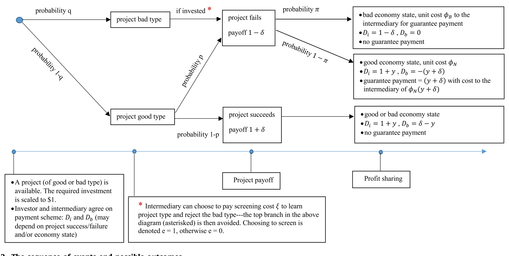
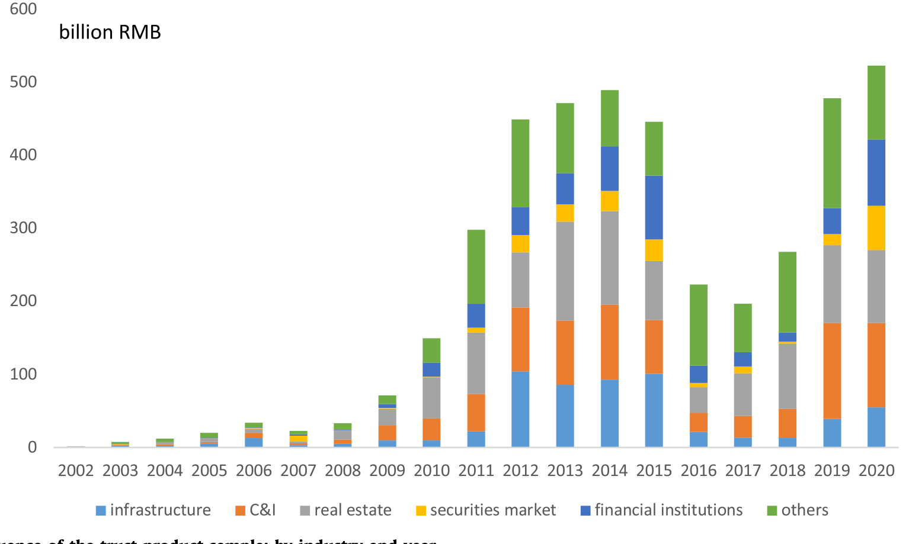
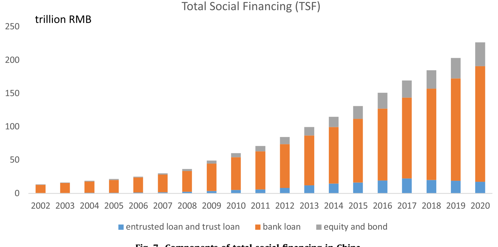
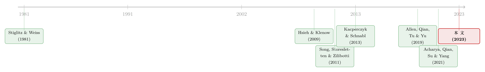

「刚兑」是原罪，还是次优解？——重读中国影子银行里的隐性担保
本文读的是 Allen, Gu, Li, Qian & Qian (2023, Journal of Financial Economics)：在中国影子银行里被千夫所指的「隐性担保」，理论上其实可以是一种次优 (second-best) 安排——它一边逼着金融中介去认真筛选项目，一边又给中介在坏年景里「可以不赔」的灵活性，从而把信贷从对国企的系统性偏好里撬出来、送到民营企业手里。而 2018 年那纸「资管新规」一旦掐断刚兑，最先被「断粮」的，恰恰是民企。
1 一个被骂了二十年的词
如果你在过去十几年里读过任何一篇关于中国金融风险的报告，几乎一定会撞见「刚性兑付」这四个字，以及紧随其后的一串道德指控：投资者不再有动力去收集信息、给产品定价，因为反正有人兜底；金融机构则因为知道自己被兜底，于是敢于承担过度的风险，把整个系统拖向脆弱。这套逻辑如此顺理成章，以至于「打破刚兑」几乎成了监管话语里的政治正确。
可是，如果隐性担保 (implicit guarantee) 真的一无是处，它为什么会成为中国影子银行最核心、最顽固的特征？为什么投资者明明在产品说明书上白纸黑字读到「收益不保证、风险自担」，却仍然普遍相信发行方、销售银行、它们的控股股东、乃至政府，会在底层项目违约时把窟窿补上？而更尴尬的是——这些隐性担保在现实里还真的常常被兑现（作者在在线附录 Table A.1 里逐一列出了违约案例中的事后兜底）。
这就是 Allen、Gu、Li、Qian 和 Qian 这篇 2023 年发表于 JFE 的论文想要拆解的张力。他们的回答是一个相当反直觉的判断：在一个传统银行系统系统性偏爱国企 (state-owned enterprise, SOE) 的经济体里，带着隐性担保的影子银行，反而是缓解资本错配的一剂次优良药。 刚兑不是单纯的原罪，它是一个被扭曲的金融体系里，市场自己长出来的、不那么坏的解。
要把这个判断讲清楚，得先回到一个最朴素的问题：在投资者看不懂项目、又需要有人替他们筛项目的世界里，「担保」到底起了什么作用？
2 一个螺丝壳里的模型：担保为什么能「逼」中介干活
论文最漂亮的地方，是用一个只有两期、几乎能写在一张餐巾纸上的模型，把隐性担保的微观逻辑讲透了。我们一步步来。
设定。 只有一个时期、两个日期：date 0 和 date 1。date 0 有一个项目，投入资本 1，到 date 1，成功则支付 \(1+\delta\)，失败则只剩 \(1-\delta\)。
$$ \text{payoff} = \begin{cases} 1+\delta, & \text{success}\\[2pt] 1-\delta, & \text{failure} \end{cases} $$
但项目有两种类型：以概率 \(1-q\) 是「正常的风险项目」，其失败率为 \(p\)；以概率 \(q\) 是「坏项目」，它必然失败。一个代表性投资者出资，但他没有甄别能力；只有金融中介握有一项筛选技术——付出筛选成本 \(\xi\)，就能看清项目类型、并把坏项目挡在门外。筛选记为 \(e=1\)，不筛选记为 \(e=0\)。
关键的两期结构在哪？ 在中介到底愿不愿意兜底。中介从项目里分得的现金流记为 \(D_b\)，它可以是负的——负的那部分，正是中介替投资者填的窟窿。而填窟窿是有成本的：到 date 1，经济以概率 \(1-\pi\) 处于「正常状态」，每单位负现金流的融资成本是 \(\varphi_N>1\)；以概率 \(\pi\) 处于「坏状态」，成本飙升到 \(\varphi_B>\varphi_N\)。坏状态里兜底之所以更贵，直觉上是因为这时候破产、再融资的代价本来就高。
于是中介的目标函数是这样一个东西——这也是整篇论文的「中枢方程」，值得逐项拆开看：
约束是投资者的参与约束 (participation constraint)：投资者的必要回报率被标准化为零，所以只要他不亏，就愿意出钱。

Figure 2: The sequence of events and possible outcomes
第一步：为什么「担保」能逼出筛选？ 想象中介若不兜底（\(D_b\) 永远非负，旱涝保收），那么坏项目失败与否跟它无关，它就没有任何动力去花 \(\xi\) 筛选——这正是批评者口中「道德风险」的源头。反过来，一旦中介对投资者作出担保、把失败的损失扛到自己身上（让 \(D_b\) 在失败时为负），它就突然有了切肤之痛：每放过一个坏项目，将来都要自己赔。于是担保成了筛选的「激励合约」。在第一优 (first-best) 情形下，中介选择筛选，得到的效用是
$$ u_{1b} = (1-q)(1-2p)\,\delta - \xi . $$
这个式子本身就很直观：筛掉坏项目后，只剩正常风险项目（概率 \(1-q\)），它的期望净收益是 \((1-p)(1+\delta)+p(1-\delta)-1=(1-2p)\delta\)，再减去筛选成本 \(\xi\)。
第二步，也是真正关键的一步：为什么是「隐性」担保，而不是「显性」担保？ 既然担保能逼出筛选，那干脆白纸黑字写一个显性担保 (explicit guarantee)，不是更干脆吗？问题就出在那个会飙升的 \(\varphi_B\) 上。显性担保意味着无论好坏年景都得赔——包括在坏状态里、当兜底成本贵到 \(\varphi_B\) 的时候也得硬着头皮赔。而隐性担保的妙处，恰恰在于它给了中介一份「可以违约的期权」：在正常状态（成本 \(\varphi_N\)）里它兑现承诺、维护声誉；可一旦撞上坏状态，它有不赔的灵活性。
于是结论水落石出：当筛选的社会收益足够高、而坏状态的兜底成本 \(\varphi_B\) 足够吓人时，隐性担保优于显性担保、也优于完全不担保。 它在「逼中介干活」和「别在最贵的时候硬扛」之间，取了一个折中。这就是所谓的次优。
第三步：把这个模型嵌进一国的资本配置。 作者接着比较两种体系：一种是只有「传统银行 + 显性担保」的体系，另一种是额外叠加了「影子银行 + 隐性担保」的扩展体系。与既有文献一致，由于对国企的系统性偏爱，传统银行里存在资本错配；而一旦允许带隐性担保的影子银行进场，更多民营项目会被资助，配置效率改善，总产出也随之更高。模型由此吐出几条可检验的预测：产品收益率随底层项目风险上升、随担保强度下降；收益率对风险的敏感度会被强担保「压平」；而一旦给担保的提供方加上成本（比如监管禁止刚兑），影子银行规模与流向非国企的信贷都会萎缩。
剩下的，就是去数据里验。
3 数据：把「担保强度」做成一把尺子
作者用的是一个相当全面的样本：覆盖全部 68 家持牌信托公司发行的投资产品。选信托业是有讲究的——它是过去十年最大的非银金融行业，到 2020 年总资产 RMB 20.5 万亿（约 US$3.04 万亿），相当于 GDP 的 20.2%；由信托、银行、券商等中介发起的产品，占了影子银行总资产的 52.3%（2020 年穆迪口径）。信托公司既与银行深度「银信合作」，又比银行受到的监管松得多（银行要交 12.5%–14.5% 的存款准备金，信托只需按税后利润提 5% 的损失准备），是观察隐性担保最干净的一块田野。

Figure 1: Total issuance of the trust product sample: by industry and year
这把「担保强度」的尺子，作者做成了一个隐性担保指数 (IG index)，由三个维度加总而成：发起信托公司的控股股东属性（央企 SOE 记 2、地方 SOE 记 1、非国企记 0）、产品是否通过五大国有银行销售（Sale bank big5）、以及信托公司是否属于注册资本最大的那 33%（Large tfirm）。指数取值 0 到 4——数字越大，市场越相信「真出事了有人兜」。68 家信托里，22 家由央企控股、31 家由地方国企控股、只有 15 家非国企，国资底色之浓，本身就说明了「谁更像被兜底的那一个」。
底层借款人的风险，则用借款人规模（注册资本）、是否身处高风险的房地产业、以及其总部所在省份的 GDP 增速来刻画。
4 主要结果：收益率同时被风险和担保「拉扯」
第一组检验落在收益率水平上，结论与模型严丝合缝：信托产品的收益率利差 (yield spread)，同时取决于底层投资风险与隐性担保强度。具体地，借款人越小、来自房地产业、或位于 GDP 增速越低的省份，利差越高；而信托公司越大、由 SOE 控股、或产品经五大行销售，利差越低。把这些维度加总成 IG 指数后，指数越高、利差越低——担保越「硬」，投资者要的风险补偿就越少。
为了对付「不同信托发起的产品本就风险不同」这一内生性担忧，作者用了两手：一是把若干改变了「担保强度」或「借款人风险」的事件当作准自然实验做双重差分 (difference-in-differences, DiD)；二是用倾向得分匹配 (propensity-score matching, PSM)，把高 IG 指数信托发的产品，匹配到底层风险相近、但低 IG 指数信托发的产品上。主结果在匹配样本里依然稳健。
那些事件本身就很有故事性：
- 2015 年股灾被用作对信托担保强度的负向冲击——那些在证券市场投入最多的信托，财务健康受创最重，其担保也最「虚」。结果正是：这些信托发的产品，利差上升得更多。
- 2014 年初首单高调违约，被当作市场对所有信托产品风险认知的一次重估。违约之后利差普遍上行，但只要担保够硬，这个冲击就被大幅抵消。
- 在最大的投资板块房地产里，作者沿用 Glaeser, Huang, Ma & Shleifer (2017) 度量地方房价风险（Hmarket risk），并用 2010–2011 年各省错峰落地的限购令（俗称「国十条」/「Order 10」）作为对房地产业的冲击。规制后风险上升、房地产产品利差走高；但担保越强，利差上得越少。
这就构成了论文的第二个核心发现，也是它在理论之外最有力的实证落点：强担保会显著压平收益率对风险的敏感度。 当 IG 指数更高时，利差对借款人规模、省份 GDP 增速、是否房地产这些风险变量的反应都更迟钝——市场仿佛在说，「反正有人兜，底层是谁、有多险，我也就不那么计较了」。
5 反转：当刚兑被掐断，谁先挨饿？
故事到这里还只是「描述」。真正把因果钉死的，是 2018 年 3 月那记重锤——中央发布《关于规范金融机构资产管理业务的指导意见》（资管新规），明令禁止对新发产品提供隐性担保。这相当于在模型里，直接给「提供担保」这个动作加上了一笔成本。模型的预测很清楚：收益率与担保强度之间的关系应当走弱，影子银行该缩，流向非国企的钱该减。
数据给出的，正是一场教科书般的验证。新规之后，收益率利差与各项担保强度度量之间的关系明显减弱——反映出市场对担保「能否兑现」的预期下降了。在总量层面，影子银行整体、尤其是信托业的规模自新规宣布后掉头向下，流向非国企部门的资金亦然。

Figure 7: Components of total social financing in China
而最刺眼、也最能体现这篇论文价值取向的一个数字藏在贷款合约的子样本里：作者拿到借款人与信托之间的贷款合约信息后发现，2018 年之后，投向高风险项目（房地产、工商企业）的产品规模下滑得更厉害——前提是信托公司的担保能力更弱、且借款人是民营的。极端到什么程度？当一家信托的担保强度处于中位数（IG 指数 = 1）时，它发给非国企借款人的贷款规模，在 2018 年之后减少了一半以上。
这就是那个让人五味杂陈的反转：监管挥刀砍向「刚兑」这个被人人喊打的坏东西，结果第一个倒下、被「断粮」的，却是本应受到呵护的民营企业。隐性担保过去悄悄替它们撑着的那把伞，被收走了。
这里要小心一个常见的误读：作者并不是在替「刚兑」唱赞歌、主张永远不该管。论文的逻辑是次优——在一个传统银行系统先天偏爱国企的扭曲环境里，隐性担保是市场长出来的补丁；真正的第一优，是去修正银行体系本身的所有制偏向。若只拆补丁、不修地基，民企融资难只会雪上加霜。
6 文献脉络：三条线在这里交汇
把这篇论文放回学术史，它其实站在三条研究线的交叉口上。
第一条线，是隐性担保本身。 最早的实证证据来自全球金融危机 (GFC) 之前对信用卡资产证券化中「隐性追索 (implicit recourse)」的研究，大体发现市场对这类向投资者提供的担保反应正面（Higgins & Mason, 2004；Calomiris & Mason, 2004；Vermilyea, Webb & Kish, 2008）。但 Acharya, Schnabl & Suarez (2013) 反过来指出，银行因显性担保而「证券化却没有转移风险」，恰恰是 GFC 的推手之一；Kacperczyk & Schnabl (2013) 则记录了发起人对货币市场基金的隐性担保如何改变其冒险行为。
第二条线，是「太大而不能倒 (too-big-to-fail)」。 一系列论文记录了最大那批银行如何享受政府补贴、并体现在其债与股的价格里（Flannery & Sorescu, 1996；Sironi, 2003；Morgan & Stiroh, 2005；Acharya, Anginer & Warburton, 2016）。这条线的特点是：担保只给最大的几家。
第三条线，是中国式的政府对国企的隐性担保。 Cong, Gao, Ponticelli & Yang (2019) 在银行贷款里、Geng & Pan (2021) 在债券市场里、Jin, Wang & Zhang (2022) 用国企违约的事件研究，分别量化了「SOE 溢价」与政府担保的价值。它们的底色，则是 Hsieh & Klenow (2009) 关于资本错配压低 TFP、以及 Song, Storesletten & Zilibotti (2011) 「Growing like China」所刻画的、偏向国企的金融体系。

本文的位置，正在这三条线的交点上，却又把它们拧了一个方向：与 too-big-to-fail（担保只惠及最大银行）不同，这里的隐性担保主要由担保能力参差不齐的信托公司提供，作者得以从多个维度去度量它；与「政府担保国企」（加剧错配）不同，作者论证的是中介对投资者的这类隐性担保，反而能支持民营部门、缓解错配、改善社会福利。它也接上了中国影子银行兴起原因的那一大束研究——双轨利率与监管套利（Wang, Wang, Wang & Zhou, 2019；Hachem & Song, 2021；Acharya, Qian, Su & Yang, 2021）、2009 年四万亿刺激的滚续压力（Chen, He & Liu, 2020）、以及委托贷款这另一种影子银行形态（Allen, Qian, Tu & Yu, 2019）。
关于利率长期下行如何「喂大」了影子银行这条更宏观的线索，可参见《利率长跌二十年，如何亲手喂大了影子银行》；而「安全资产是被谁制造、又牺牲了谁」的视角，则与《无风险国债是「制造」出来的》遥相呼应。本文谈的资本错配，也可以和《市场太「集中」，资本就会配错地方》对照着读。
7 评论与延伸（Q&A + 研究方向）
(a) 几个可能的疑问
Q：这里的「隐性担保」和「太大而不能倒」的政府担保，到底差在哪？
差在三处：一是担保人——前者是信托等中介对投资者，后者是政府对最大那几家银行；二是受益面——前者覆盖一大批担保能力强弱不一的信托，后者只惠及头部；三是福利方向——政府担保国企会加剧错配，而中介对投资者的隐性担保反而把钱导向民企、缓解错配。正是这个「方向相反」，构成了本文的核心贡献。
Q：凭什么说「隐性」担保优于「显性」担保？不透明难道不是更糟？
关键在那个会飙升的坏状态成本 \(\varphi_B\)。显性担保要求好坏年景都赔，包括在兜底最贵的坏状态里硬扛；隐性担保则给了中介一份「坏年景可以不赔」的违约期权。当 \(\varphi_B\) 足够高、筛选的社会收益足够大时，这份「该赔时赔、扛不住时认栽」的灵活性，反而让隐性担保成了次优解。
Q：把刚兑一管，民企先挨饿——这不正说明刚兑是好东西、根本不该管吗？
不能这么读。论文讲的是次优：在银行体系先天偏爱国企的扭曲下，隐性担保是市场长出的补丁。第一优是去修银行体系本身的所有制偏向。结论是「拆补丁要配套修地基」，而非「补丁神圣不可动」。
Q：作者用的是事前 (ex ante) 预期收益率，还是事后违约率？这对识别意味着什么？
主检验用的是产品说明书里营销的预期收益率（Expected yield），即事前的定价。好处是它直接反映市场对风险与担保强度的定价，不被事后是否真违约污染；代价是它度量的是「预期」，需要事件冲击来佐证这些预期确实随担保强度而动——这正是 2014 违约、2015 股灾、2018 新规等一系列 DiD 的用处。
Q：用「信托是不是国企」来度量担保强度，会不会其实在度量风险偏好等别的东西？
这是 IG 指数最大的软肋——所有制、规模、销售渠道，可能同时关联着信托的风险选择、客群、乃至底层资产质量。作者的应对是 PSM（匹配底层风险相近、仅 IG 不同的产品）加多重事件 DiD。但「国资属性」是否纯粹地只通过「担保可信度」这一条渠道影响利差，仍是读者要自行掂量的地方。
Q：2014 违约、2015 股灾、Order 10、2018 新规——堆了这么多事件，识别可信吗？
多事件互为印证是优点：单看任何一个都可能有其他解释，但「担保越强、冲击被抵消得越多」这一交互效应在四个性质迥异的冲击里反复出现，巧合的概率就低了。隐忧在于这些冲击多为全国性、时点集中，平行趋势主要靠担保强度的横截面差异而非时间，读者需关注其异质性处理效应是否稳健。
(b) 几个可能的研究问题与提案
- 刚兑退场后，民企信用需求去了哪里？
- 【经济故事】本文止步于「信托对非国企的贷款腰斩」。一个自然的下一问是：这些被断粮的民企，是转向了公司债/私募债、还是干脆收缩投资？若信用利差在替代渠道上系统性走高，就能量出隐性担保消失的「真实成本」。
-
【可行性】中。需要把借款人 ID 跨信托、债券、银行贷款打通（Wind/CSMAR + 债券发行明细），识别可用 2018 新规作为 DiD，借款人固定效应控制选择。
-
外资持有人进入后，会给「隐性担保」重新定价吗？
- 【经济故事】境外投资者通常不吃「刚兑」这一套，更依赖现金流与契约。随着债券通等渠道引入外资，对同一类信用资产，外资持有比例越高的券种，其利差对「国资担保强度」的敏感度是否更低？这能检验隐性担保到底是「真信念」还是「本地惯例」。
-
【可行性】中低。信托产品几乎无外资，须把场景平移到城投/产业债，并获取持有人结构数据（中债登/上清所托管明细），外资份额的内生性需用纳入指数等外生事件来处理。
-
担保强度与二级市场流动性。
- 【经济故事】本文聚焦一级定价，但隐性担保理应也影响二级流动性——「有人兜」的产品在压力时刻是否更抗跌、价差更窄？这把本文与流动性文献接上。
-
【可行性】中。信托产品无二级市场，宜改投有做市与成交数据的城投/信用债，用 2018 新规或个案违约作冲击，以 IG 类指标交互识别。
-
净值化转型如何改变赎回与挤兑风险。
- 【经济故事】资管新规不止禁刚兑，还推「净值化」。当产品从「预期收益型」变成「净值波动型」，投资者的赎回行为是否更顺周期、更易触发挤兑？这与公司债基金的脆弱性文献天然相通。
- 【可行性】中高。银行理财/信托的净值与申赎数据近年逐渐可得，识别可用净值化改造的错峰落地做 staggered DiD。
8 我的判断
这篇论文最大的贡献，是把一个被舆论简单道德化的对象——「刚兑」——重新放回经济学的天平上，用一个干净的两期模型说清了它「为何存在、为何是隐性、为何可能更好」，再用全行业 68 家信托的产品数据，把模型的三条预测一一验在了收益率水平、风险敏感度、与监管冲击后的总量收缩上。尤其是「强担保压平风险敏感度」与「新规后非国企贷款腰斩」这两个发现，既符合理论、又具政策含义，分量很足。
我对识别的担忧主要有二。其一，IG 指数把所有制、规模、销售渠道捆在一起当「担保强度」，但这三者也可能各自通过风险选择、客群质量等别的渠道影响利差——PSM 与事件 DiD 缓解了它，却难以完全洗清「国资属性只经担保可信度一条路」的强假设。其二，全文核心是事前的预期收益率，它度量的是市场信念；虽有在线附录的事后兜底案例佐证，但「信念」与「真实违约损失分担」之间的缺口，仍是把模型映射到数据时最脆弱的一环。
接下来我最想看到的，是把镜头从一级定价移到二级流动性与持有人结构：当刚兑预期一点点蒸发，被断粮的民企信用、被重新定价的安全幻觉、以及外资持有人带来的「不吃这套」的边际力量，会如何在城投与信用债市场里重新洗牌。那才是这条故事线真正未完的下半场。
参考文献
- Acharya, V. V., Schnabl, P., Suarez, G. (2013). Securitization without risk transfer. Journal of Financial Economics 77, 515–536.
- Acharya, V. V., Qian, J., Su, Y., Yang, Z. (2021). In the Shadow of Banks: Wealth Management Products and Issuing Banks' Risks in China. NYU Stern and Fudan University, Working Paper.
- Allen, F., Qian, Y., Tu, G., Yu, F. (2019). Entrusted loans: a close look at China's shadow banking system. Journal of Financial Economics 133(1), 18–41.
- Chen, Z., He, Z., Liu, C. (2020). The financing of local government in China: Stimulus loan wanes and shadow banking waxes. Journal of Financial Economics 137(1), 42–71.
- Cong, L., Gao, H., Ponticelli, J., Yang, X. (2019). Credit allocation under economic stimulus: Evidence from China. Review of Financial Studies 32(9), 3412–3460.
- Geng, Z., Pan, J. (2021). The SOE Premium and Government Support in China's Credit Market. Shanghai Jiao Tong University, Working Paper.
- Glaeser, E., Huang, W., Ma, Y., Shleifer, A. (2017). A real estate boom with Chinese characteristics. Journal of Economic Perspectives 31(1), 93–116.
- Hachem, K., Song, Z. (2021). Liquidity rules and credit booms. Journal of Political Economy 129(1), 2721–2765.
- Hsieh, C.-T., Klenow, P. (2009). Misallocation and manufacturing TFP in China and India. Quarterly Journal of Economics 124(4), 1403–1448.
- Jin, S., Wang, W., Zhang, Z. (2022). The real effects of implicit government guarantee: evidence from Chinese SOE defaults. Management Science.
- Kacperczyk, M., Schnabl, P. (2013). How safe are money market funds? Quarterly Journal of Economics 128(3), 1073–1122.
- Song, Z., Storesletten, K., Zilibotti, F. (2011). Growing like China. American Economic Review 101(1), 196–233.
- Stiglitz, J., Weiss, A. (1981). Credit rationing in markets with imperfect information. American Economic Review 71, 393–410.
- Wang, H., Wang, H., Wang, L., Zhou, H. (2019). Shadow Banking: China's Dual Track Interest Rate Liberalization. Tsinghua University, Working Paper.